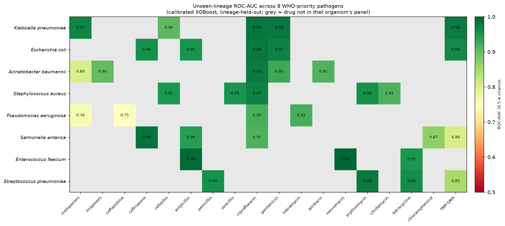
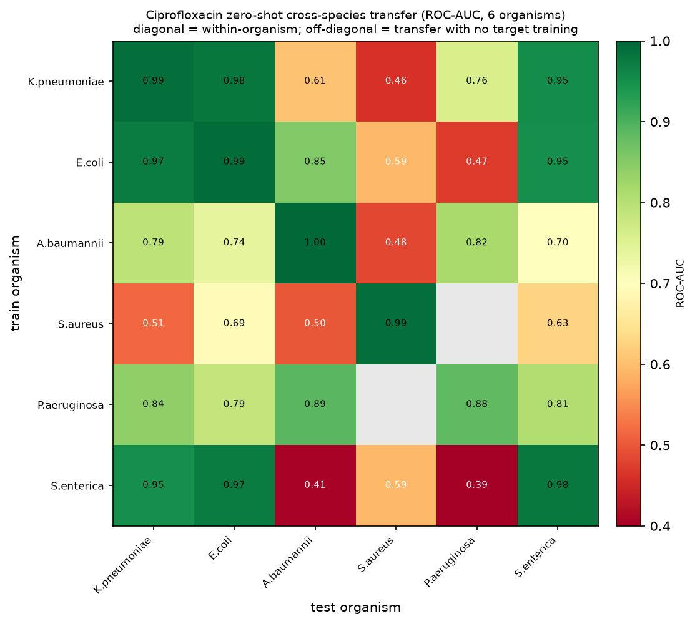
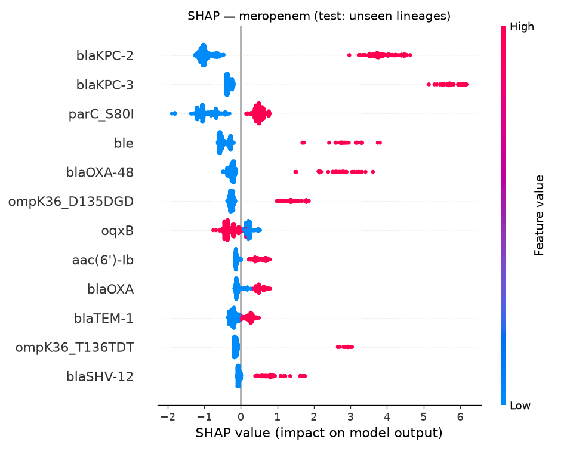

An interpretable, honestly-benchmarked ML classifier for antibiotic resistance from bacterial genomes
Predict resistant vs. susceptible per antibiotic — validated on unseen lineages,
benchmarked against a transparent gene-lookup, explaining the genes behind every call.
8 WHO-priority pathogens · 36 models · fully computational · public data · two-person team
Opening
Antibiotic resistance is projected to become a leading cause of death worldwide. Deciding whether a strain resists a drug normally takes days of lab culturing — but the genome already carries the answer. This project reads it directly from sequence, and does it honestly, which is the hard part and the whole point.
The team
Two people, complementary by design
Software / ML engineer
Data pipeline & feature extraction
Phylogeny-aware splitting
Modeling, calibration, SHAP tooling
The interactive demo
Microbiology M.Sc. ⚕
Organism & drug selection
Phenotype-label quality control
Biological validation of determinants
Clinical error trade-offs & limitations
Engineering builds the rigor; microbiology owns every biological decision and proves the model learned real mechanisms, not noise.
Say
Deliberately two-person. A leaky pipeline with perfect biology is worthless; perfect code predicting nonsense genes is worthless. Neither half stands alone.
The whole system in one breath
🧬 → 🧩
Genome in → determinant features
Which known resistance genes & mutations does this strain carry?
📊 → 💬
Per-drug R/S + the reason
Calibrated probability, and the genes that drove the call.
Headline: for cefoxitin, a gene-lookup misses 96.3% of resistant strains —
resistance comes from losing a porin, not gaining a gene. Our model lifts AUC from 0.50 → 0.90. That gap is the contribution.
Say
Genome in → annotate the genes it carries → per-drug call with a calibrated probability → and it names the genes behind the call. The cefoxitin gap is the cleanest demonstration of what ML adds over a database query.
Part 1
The problem & why it matters
Why genomes can predict resistance — and the two traps that fool naive projects.
Why AMR
Resistance is written in the genome
Bacteria resist by carrying a gene (an enzyme that destroys the drug)…
…or by a point mutation in the drug's target.
Standard testing grows the strain against the drug — accurate but slow (days).
Whole-genome sequencing of clinical isolates is now routine → huge public collections of
genomes paired with lab phenotypes already exist.
The opportunity
The raw material for genome→resistance prediction is sitting in public databases. The challenge isn't data — it's honest evaluation.
Say
Two mechanisms: acquired genes, or target mutations. Sequencing is routine, so genomes paired with lab phenotypes already exist at scale.
The gap we fill ⚕
Two traps that inflate every naive result
1 · Clonal population structure
Bacteria are clonal — the data is full of near-twins from the same lineage. A random train/test split lets the model see a resistant strain in training and its near-identical cousin in test → it's rewarded for recognizing the clone, not understanding resistance. Every metric inflates.
2 · "It's just a database lookup"
If a model merely detects a known resistance gene, it's a database query, not science. The value is in what the model adds over that lookup.
Our whole design answers both: a phylogeny-aware split and an explicit rules baseline.
Say
Trap 1 is the bacterial version of data leakage — the single biggest way these projects fool themselves. Trap 2: beating a gene-lookup is the only claim worth making.
Research question & hypothesis
What we set out to prove
Question. Can an interpretable model predict resistance from genomic features, generalize to lineages it has never seen, and be honestly benchmarked against a gene-lookup and published work?
Hypothesis. A gradient-boosted model on determinant features, under a phylogeny-aware split, will:
a · strong per-drug discrimination on unseen lineagesb · match/beat the gene-lookup, cutting dangerous errorsc · top features = established mechanisms
Say
Three-part hypothesis: discrimination on unseen lineages, beating the lookup on the dangerous errors, and features that map to real biology.
Our honesty contract
Nine non-negotiables, enforced in code
✓ Split by lineage, never randomly
✓ Always report the gene-lookup baseline
✓ One model per antibiotic
✓ VME / ME reported before accuracy
✓ Determinant features only (no k-mers)
✓ Always calibrate probabilities
✓ No state-of-the-art overclaim
✓ Scope discipline
✓ Never fabricate a genome/label/number
Written before touching data. A test fails the build if a single lineage crosses the split.
Say
These nine rules were fixed up-front and never broken. Each is enforced in code or tests — the leakage test literally fails the build on any overlap.
Part 2
Setting up from scratch
How anyone rebuilds this from nothing — the environment, tools, and reproducibility spine.
Streamlit — the demo web app PyTorch + ESM-2 (fair-esm) — protein-language-model MIC extension Runs on a laptop; ESM-2 embeds on Apple-Silicon GPU in minutes.
conda, not pip the bio tools ship via bioconda
Say
Everything free and public. We use conda specifically because AMRFinderPlus and mlst come from bioconda. Standard ML stack otherwise.
Install
From bare machine to a prediction in 4 commands
# 1 · Get the code
git clone https://github.com/kappaborg/amr-resistance-predictor
cd amr-resistance-predictor
# 2 · Build the exact pinned environment (conda — for the bio tools)
conda env create -f environment.yml
conda activate amr-resistance-predictor
# 3 · Prove it works — runs the zero-lineage-leakage test
make test # -> 20 passed# 4 · Predict on a cached genome (instant, no download)
python -m src.app.predict --organism saureus --genome-id 1280.10000
environment.yml pins exact tool + DB versions, so anyone regenerates the same features.
Say
Four commands from nothing to a working prediction. Bio-tool paths resolve automatically from the active env, so this works on her laptop, Linux, or Colab — not just the original machine.
Reproducibility spine
Nothing scientific is hard-coded or untracked
Fixed seed 42
everywhere — splits, models, bootstraps
config.yaml
organism, drugs, thresholds, model choice
data/manifest.md
every source, version, query, count
Makefile
one command per pipeline stage
decisions.md
53 logged decisions — the lab notebook
data/raw/ git-ignored
regenerates from the manifest
Say
Reproducibility is the spine, not a slide. 53 decisions logged with rationale — that's our defense script and lab notebook.
Part 3
The data
Public resources, data-driven organism choice, and the label discipline that keeps it honest.
Resources
Five public sources, no wet lab
Role
Source
What it gives
Genomes + labels
BV-BRC
Assembled genomes + laboratory R/S phenotypes
Reference determinants
CARD
Catalog of known resistance genes + mutations
Feature annotation
AMRFinderPlus
Genome → gene/mutation presence-absence
Lineage typing
mlst
Each genome → sequence type (lineage)
Validation reference
Published AMR-ML
Honest external comparison
Say
BV-BRC gives genomes paired with lab phenotypes. CARD + AMRFinderPlus are the vocabulary and the tool. mlst assigns lineages for the honest split.
Week-1 decision ⚕
Organism chosen by data, not gut
Queried BV-BRC for lab-phenotype counts across candidate pathogens/drugs.
Picked for abundant, class-balanced resistant/susceptible data.
Locked: Klebsiella pneumoniae (taxon 573) + a 5-drug panel.
Why K. pneumoniae fits the thesis
Carbapenem resistance is exactly where single-gene rules fail — porin loss + β-lactamase combinations → real, catchable dangerous errors.
Strong clonal structure → the lineage-aware split genuinely bites.
We queried for balanced data first. K. pneumoniae won on the science — carbapenem resistance is combinatorial, and its clonality makes the honest split meaningful. Five drugs = five different mechanisms = genuinely distinct explanations.
Label discipline
Lab phenotypes only — avoiding circularity
Kept ✓
evidence = "Laboratory Method" — actual measured susceptibility.
Excluded ✗
Computational AMR predictions — training on them = predicting another model's output (circular).
MIC / SIR → binary R/S; the ambiguous "Intermediate" class is dropped, not guessed (⚕ needs sign-off).
Say
Critical subtlety: BV-BRC mixes lab and computational phenotypes. We kept only lab-measured — otherwise we'd be predicting predictions. Intermediate is dropped rather than guessed.
Acquisition
Rigor shows in the bugs you catch
🐛 Caught: silent truncation
The genome API defaulted to 25 records → assemblies truncated to ~2 of ~5.5 Mbp. A truncated genome drops genes → false-absent features → corrupted labels. Caught by a file-size integrity check; fixed and re-downloaded everything.
Robust by design
BV-BRC REST API — no bulk download, size flagged first. Downloader retries with backoff and resumes — one timeout shouldn't kill an overnight run.
Decision log entries #15–#16.
Say
Two stories that show rigor: we caught a truncation bug that would have silently corrupted labels, and the downloader is resumable. Both in the decision log.
Length cap widened to 7.5 Mbp — MDR plasmid strains legitimately reach ~6.6 Mbp; a tight cap discards real resistant strains.
Drops only 1.9%, and the drops are class-balanced → no label bias.
3,850QC-passed K. pneumoniae genomes
688determinant features
Say (your domain)
Thresholds follow MIMAG, not guesswork. We widened the length cap on purpose so we don't throw away real MDR resistant strains. Drops are balanced, so labels aren't biased. End with 3,850 genomes.
Part 4
Methods — the science core
Features, the lineage split (the crown jewel), models, calibration, and the clinical metric.
Feature extraction
Genome → binary determinant matrix
AMRFinderPlus --organism Klebsiella_pneumoniae on every genome.
Keep only true AMR elements — exclude virulence / stress genes.
Include point mutations (gyrA, parC…) — the whole story for fluoroquinolones.
Fast & interpretable — not black-box k-mers.
3,850 × 688genomes × determinants (K. pneumoniae)
Say
Every genome → the known genes and mutations it carries → binary matrix. We include point mutations because those are the fluoroquinolone story. Deliberately not k-mers.
⭐ The most important slide
The lineage-aware split
mlst assigns each genome its sequence type (lineage).
StratifiedGroupKFold holds out whole lineages for testing — the model is tested only on sequence types it has never seen.
R/S balance preserved across the split.
Untypeable genomes each get a unique synthetic lineage — they can never secretly pool into one leaky group.
The guard
A test asserts zero lineage overlap between train and test — for all 8 organisms. If one sequence type ever appears in both, the build fails.
tests/test_split.py · 20 tests pass
This one choice is why every number afterwards is trustworthy.
Say
The most important slide. We hold out entire lineages and a test fails the build on any overlap. Everything downstream is only trustworthy because of this.
Why it matters — measured
We quantified the leakage we avoided
Same model, scored under a naive random split vs our lineage split:
+0.010mean AUC inflation from a random split (max +0.032, cefoxitin)
The inflation is small — because our features encode mechanism, not ancestry. A genome resists because it carries blaKPC, not because of its clade.
Contrast
K-mer models — which secretly encode lineage — lose 0.1–0.2 AUC on this same test.
Our small gap is itself evidence we learned biology. We still report the honest lineage number everywhere.
Say
A beautiful result: the random split only inflates us by +0.010 because our features are mechanistic. K-mer models lose 0.1–0.2. The small gap proves we learned biology, not lineage.
Modeling
One model per antibiotic, three honest tiers
1 · Rules baseline
"Resistant if any known gene for this drug is present." The transparent yardstick.
2 · Logistic regression
Simple, linear, interpretable reference.
3 · XGBoost
Gradient-boosted — the primary model. Calibrated + thresholded.
Resistance is drug-specific → never pool drugs into one label. All three reported so "what ML adds" stays honest.
Say
Strictly one model per antibiotic. Three tiers — rules, logreg, XGBoost — so the added value over the lookup is always visible.
Fairness ⚕
The gene-lookup baseline is organism-aware
"Ampicillin resistance" is not the same gene in every bug:
A single generic rule would be a strawman baseline in some organisms. ORG_RULES matches the actual mechanism per (organism, drug) — so when we beat the baseline, we beat a real one.
Say (your domain)
Ampicillin means β-lactamases in E. coli but pbp5 in Enterococcus. A generic rule would be a strawman. We match the real mechanism per organism, so our wins are fair.
Calibration & the clinical metric ⚕
Probabilities that mean something · errors that matter
Calibration
Isotonic calibration + Brier score + reliability curves. A "90% resistant" must be right ~90% of the time — an uncalibrated 0.9 that's really 0.6 is dangerous.
VME / ME — reported first
Very-major error (VME): resistant called susceptible — patient gets a drug that won't work. The dangerous miss.
Major error (ME): susceptible called resistant — an unnecessary alarm.
Operating point tuned to cap VME ≤ 3% (CLSI/FDA-style).
Capping VME raises ME on hard drugs — a clinical trade-off, made in the open, never hidden.
Say (clinical heart)
Accuracy hides the error that kills. VME = calling a resistant strain susceptible. We report VME/ME before AUC, cap VME at ≤3% on out-of-fold train data, and show the ME trade-off with pass/fail flags.
Part 5
Training & the pipeline
The assembly line — every box is a file you can run.
# one command per stage — or the whole spine at once
make data · features · split · train · eval · figures # make all
Two decision gates: "enough R and S per drug?" and "generalizes to unseen lineages?" — if not, loop back to the split.
Say
Every box is a real, runnable file. Two gates protect the result: enough balanced data, and generalization to unseen lineages.
How a model is built
No peeking at the test set
Fit XGBoost on the training lineages.
Calibrate (isotonic).
Pick the VME≤3% threshold on out-of-fold training predictions — never the test set.
Evaluate once on the held-out lineages.
Deployable bundle
model + calibrator + threshold + feature columns → one .joblib per organism-drug
36deployable models (8 organisms)
Say
Threshold chosen on out-of-fold training predictions, evaluated once on held-out lineages. Each deployable model bundles everything the demo needs — 36 of them.
Part 6
Results
Strong discrimination on unseen lineages — and honest about where the lookup already wins.
The headline
Cefoxitin — where the lookup fails
0.52gene-lookup AUC (coin flip)
→
0.90model AUC (DeLong p ≈ 0)
Resistance is driven by losing the ompK36 porin — the drug can't get in. A gene-lookup is blind to a missing feature (misses 96.3% of resistant strains). The model learns the absence pattern.
The cleanest possible demonstration of what ML adds over a database query.
Say
The money slide. Cefoxitin resistance = porin loss. A lookup can't see a missing feature, so it's at chance. The model learns the absence pattern and reaches 0.90. That gap is the whole contribution.
K. pneumoniae 5-drug panel · unseen lineages (pooled CV)
Strong & significant across the board
Drug
AUC model
AUC rules
VME
ME
DeLong p
ciprofloxacin
0.983
0.911
2.3%
7.7%
7e−36
TMP-SMX
0.977
0.885
2.3%
18.3%
9e−51
meropenem
0.968
0.933
1.3%
55.9%
5e−24
gentamicin
0.981
0.948
1.6%
32.4%
1e−30
cefoxitin
0.905
0.518
0.7%
94.2%
~0
VME point estimates at/below the 3% bar on all five · beats the lookup significantly on all five. Honest caveat: lineage-clustered CIs are wide (meropenem 1.3% [0.3–3.5]) — target met in expectation, not guaranteed at the upper bound. High ME on meropenem/cefoxitin = the VME-first trade-off, shown with flags.
Say
AUC 0.90–0.98 on unseen lineages. Every VME point estimate is under 3%. Be precise if asked: because we bootstrap by lineage, not by genome, the intervals are wide — meropenem's upper bound is 3.5%, so we say the target is met in expectation, not guaranteed. DeLong p-values are astronomically small. High ME on the hard drugs is the deliberate VME-first trade-off, not hidden.
The honest reading ⚕
Where we do not win — said first
Gentamicin
Rules already excellent (AUC 0.948) — direct enzyme signal. ML only matches it. We say so.
Salmonella chloramphenicol
Rules baseline beats our model. Reported plainly.
S. pneumoniae TMP-SMX
Causal folA/folP not in the catalog → any signal is co-selection, not mechanism. Labeled as such.
An award isn't won by claiming you win everything — it's won by knowing exactly where you don't.
Say (credibility)
Gentamicin: lookup already strong, we match. Salmonella chloramphenicol: rules beat us. S. pneumoniae TMP-SMX: co-selection, not mechanism. Honesty is a feature.
Generalization
8 WHO-priority pathogens · one pipeline

Unseen-lineage ROC-AUC, 8 organisms × up to 18 drugs (36 calibrated models). ROC 0.84–0.998.
Say
Identical pipeline — only taxon, AMRFinderPlus string, and MLST scheme change — across 8 pathogens spanning the Gram divide. ML earns its keep where biology is combinatorial: S. aureus cefoxitin, A. baumannii amikacin (+0.32), E. faecium pbp5 (+0.35), S. pneumoniae PBP mosaic. Note: E. cloacae and C. jejuni excluded for insufficient data — honest selection.
Cross-species zero-shot transfer
The model learned biology, not lineage

Train on one species, test zero-shot on another. Off-diagonal = transfer.
Ciprofloxacin transfers across Gram-negatives (shared gyrA/parC target + numbering)…
…and collapses to Gram-positive S. aureus (uses grlA, different gyrA numbering).
A mechanistically-expected boundary — impossible if the model had memorized lineage artifacts.
Say
Trained on one species, tested zero-shot on another. Transfers among Gram-negatives, collapses to Gram-positive S. aureus — exactly what a microbiologist would predict. Proof it learned mechanism.
Statistical rigor
The claim, backed by statistics
DeLong test
Model beats the gene-lookup significantly on discrimination — every drug, p from 2e−14 to ~0.
Lineage-clustered bootstrap
95% CIs that resample whole lineages, not genomes — honest for a small resistant class.
Imbalance-robust
MCC + PPV/NPV at realistic prevalence — accuracy alone would flatter us.
Our AUCs sit in/above the published band — but under a stricter lineage split, with interpretability + clinical errors most studies omit. Claim: honestly measured, not state-of-the-art.
Say
The core claim is backed by DeLong significance, not just a visible gap. CIs resample whole lineages. We place our numbers in the published band under a stricter split.
Part 7
Advanced & novel extensions
MIC regression · protein language models · an honest negative · uncertainty & clinical utility.
Beyond binary
MIC regression — predicting the level
Clinicians think in MIC — the minimum inhibitory concentration. We predict it continuously and score it the way regulators do: Essential Agreement (within ±1 two-fold dilution).
Censor-aware scoring — most real MICs are ">32" / "≤0.5" bounds; naive clipping distorts the metric.
Drug (K. pneumoniae)
Essential Agreement
ciprofloxacin
92.7%
gentamicin
85.1%
cefoxitin
79.9%
meropenem
75.4%
Say
Not just whether but how strongly a strain resists. Scored by Essential Agreement — the regulatory criterion. Cipro hits 92.7%. Scoring is censor-aware because most MICs are reported as bounds.
Protein language model · honest positive
ESM-2 — allele resolution for the hard carbapenems
Presence/absence discards which allele — but carbapenem MIC depends on it (KPC-2 vs KPC-3; OXA/NDM/VIM). We embed each resistance protein's actual sequence with ESM-2, so different alleles get different vectors.
Real, significant gains — exactly where predicted
K. pneumoniae meropenem EA 68 → 73% (+4.8, p=0.0004)
A. baumannii imipenem EA 54 → 60% (+6.7, p=0.0001)
Neutral where determinants already saturate (gentamicin, cipro). 650M gave no extra gain → 150M is the honest, laptop-scale choice.
Say
Genuinely novel. Allele identity drives carbapenem MIC; presence/absence throws it away. ESM-2 recovers it — significant gains on exactly the hard carbapenems, neutral elsewhere, as the biology predicts. Bigger model gave nothing more.
Honest negative — a defense highlight
We implemented the SOTA graph model. It lost.
Isolate-similarity GNN
Each genome a node, edges by similarity (AMR-GNN style). On identical lineage-grouped folds it was worse than a plain MLP on all 5 drugs.
Why — and we can explain it
Our curated determinant features already capture the mechanistic signal cleanly. A population-structure graph only re-adds the lineage information we deliberately avoid, and its smoothing blurs sharp gene→phenotype boundaries.
"We tested state-of-the-art, it didn't win, and here's exactly why" — a stronger position than assuming it would help.
Say (favorite for defense)
A negative result. We implemented the actual published graph architecture; it lost on every drug because our features already carry the signal and the graph re-adds lineage. Testing and rejecting SOTA beats assuming.
Uncertainty & clinical utility
A model that knows when it doesn't know
Conformal abstention
Per-class coverage + an explicit "defer to phenotypic testing" option. Confidently handles ~95% for well-powered drugs; for hard carbapenems, ~55% at near-zero VME, defers the rest. Validated under lineage shift.
Decision curve & risk-coverage
Net benefit beats the lookup + treat-all across the VME-averse region. Deferring the least-confident ~30% roughly halves VME (meropenem 8.7% → 3.5%).
Say
A responsible tool abstains. Conformal gives a validated confidence + a defer-to-lab option. Decision-curve ties it to clinical net benefit; deferring the least-confident 30% halves VME.
Part 8 ⚕
Interpretability & biological validation
The microbiologist's section — does the model rely on real mechanisms?
SHAP ⚕
Every call names its genes

Meropenem SHAP — blaKPC-2 / blaKPC-3 rank as the top determinants (the carbapenemase). Per-strain, auditable.
Say (your domain)
SHAP ranks which determinants drove each call, globally and per strain. A black box becomes a colleague you can argue with — if it leans on a nonsensical gene, we catch it.
Biological validation ⚕ — the payoff
Top features = textbook mechanisms
Drug
Model's top determinants
Known mechanism
✓
ciprofloxacin
gyrA, parC (QRDR) + qnr
DNA gyrase / topoisomerase target mutation
✓
gentamicin
aac(3) acetyltransferases
Aminoglycoside-modifying enzyme
✓
TMP-SMX
sul1, dfrA
DHPS / DHFR bypass
✓
meropenem
blaKPC-2, blaKPC-3
Carbapenemase
✓
cefoxitin
ompK36 porin loss
Reduced drug entry (loss, not gain)
✓
S. aureus oxacillin
mecA
Altered PBP2a
✓
E. faecium ampicillin
pbp5
Altered penicillin-binding protein
✓
S. pneumoniae penicillin
pbp1a/2b/2x mosaic
Altered PBPs (mosaic)
✓
Honest caveat: co-selection inflates some co-carried plasmid markers → read per-strain SHAP, not just averages. Catalogued determinants only → no novel-gene discovery (needs pan-genome features).
Say (headline)
Clean validation: every drug's top determinants are the textbook mechanism. Cefoxitin correctly keys on porin loss. The model learned real microbiology. Caveat: co-selection inflates co-carried markers, so per-strain SHAP is the honest lens.
Part 9
The demo
A working web app — genome in, explained per-drug calls out.
Interactive app
8 organisms · upload a genome · get explained calls
Pick an organism → cached genome or upload a FASTA.
A working app, not a mockup. Pick an organism, upload a FASTA, get per-drug calls with the genes behind them. The AI narrative is explanation-only and never changes a call.
Safety
The species guard
The model is a function of the determinant vector — it will "predict" on anything (a fungal file once produced a spurious call).
So the app verifies species two independent ways:
MLST scheme (species-specific typing)
Intrinsic marker genes (works on protein input too)
Mismatch → predictions withheld.
Every screen
"Research / decision-support only — not a diagnostic. Complements, does not replace, phenotypic susceptibility testing."
Say
The model predicts on anything, so we verify species via MLST + intrinsic markers and withhold on a mismatch. Every screen repeats the disclaimer.
Part 10
Positives & negatives — honestly
Both belong on the slide. The limitations are where the honesty thesis pays off.
Strengths
What makes this award-grade
Honest by construction — lineage split enforced by a build-failing test.
Beats the lookup where it matters, with DeLong significance.
Generalizes across 8 pathogens + the Gram divide; transfers along mechanistic lines.
Interpretable — every call named & biologically validated.
Determinant features only — no novel-gene discovery.
Honest weak spots — Salmonella chloramphenicol, A. baumannii carbapenems, S. pneumoniae TMP-SMX.
A. baumannii meropenem MIC gain borderline (p=0.051, under-powered).
Published comparison is band-level, not a re-run head-to-head.
A limitation you raise yourself reads as mastery; dragged out of you, it reads as a gap.
Say
These are on the slide on purpose. Every one is a question a judge would ask — so we ask it first and answer it. This is where the honesty thesis pays off.
Part 11 · Ethics & reproducibility
Built to be checked, not trusted
Ethics
Decision-support, not a diagnostic device
Complements phenotypic testing — hence VME-first
Public, de-identified data only; database bias stated
Interpretability = an ethical safeguard
Reproducibility
Pinned environment + fixed seed
Data manifest + 53-entry decision log
20-test suite anyone can run
Raw data regenerates from the manifest
Say
Not a diagnostic — a missed resistant call has real cost, which is why we lead with VME. Only public data. Interpretability is itself a safeguard. Everything is designed to be rebuilt and checked.
🧬
Honestly measured
not "state-of-the-art" — trustworthy
0.50→0.90cefoxitin: lookup → model
8 · 36pathogens · deployable models
The single most important thing we did: the lineage-aware split, enforced by a test. Everything downstream is trustworthy because of it.
Close
If you remember one thing: the lineage-aware split enforced by a test makes every number trustworthy. We don't claim to win everything — we claim to have measured honestly. Q&A prep is in the speaker guide.
1 / 41
← → navigate · F fullscreen · S speaker notes · P print/PDF